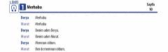

YİTurk tilini A1 darajasida o'rganuvchilar uchun dinlash matnlari to'plami.
Ushbu qo'llanma Yunus Emre Enstitüsü tomonidan turk tilini boshlang'ich A1 darajasida o'rganuvchilar uchun tayyorlangan dinlash matnlarini o'z ichiga oladi. Kitobda kundalik muloqot, tanishish, alifbo va millatlar kabi asosiy mavzulardagi dialoglar keltirilgan. Materiallar tinglab tushunish ko'nikmalarini rivojlantirishga qaratilgan.